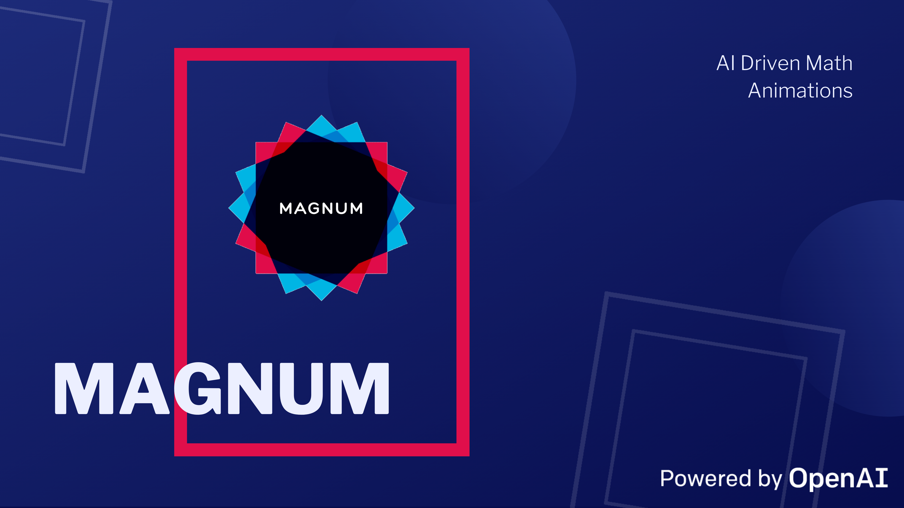
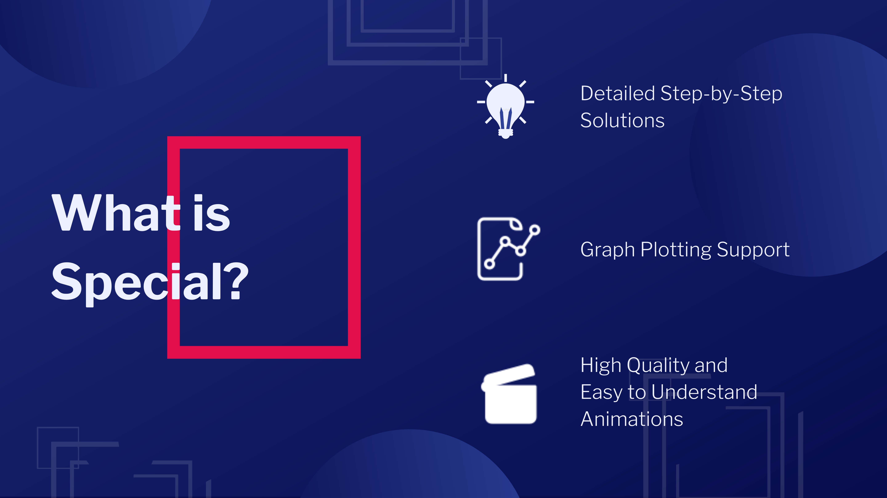
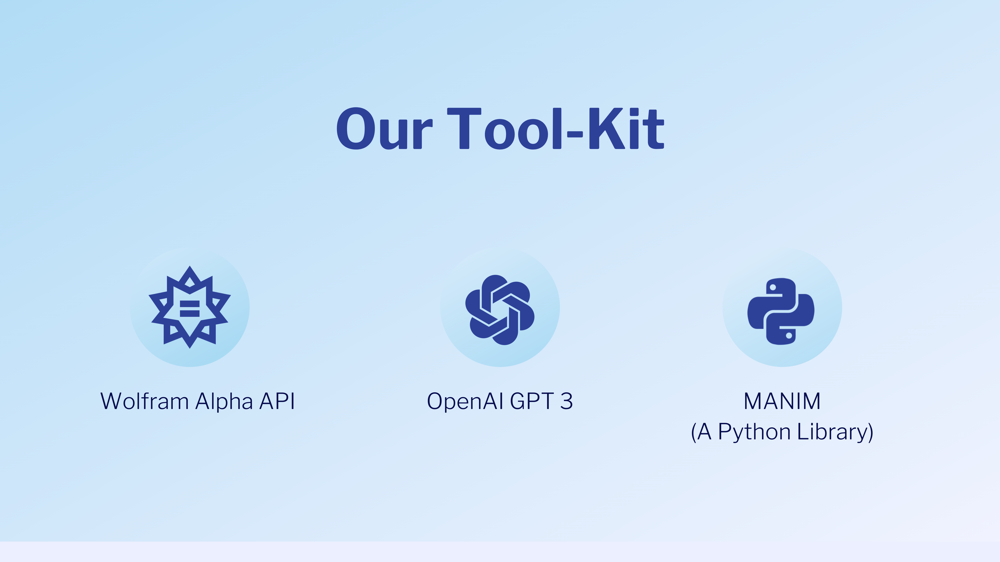

Magnum Project

What is Magnum?
It is an Open Source Toolkit to turn Math Problems into Elegant Video Animations

How does it work?
- You enter your math-related query, in plain conversational English.
- AI figures out how to solve your math problem and how to animate it- all by itself.
- You get the working Manim code and rendered Animations!
What tools are used and why?

We use:
- Wolfram Alpha API: To generate step by step solutions to user queries.
- OpenAI GPT 3: To convert plain text to LaTeX and Python functions in phases.
- MANIM: To animate and render the final solution as .mp4
Our Vision
Our Founder's vision is to make Math more beautiful and accessible for all.
Is Magnum User-Friendly?
Yes! Magnum is designed for non-programmers, so that you focus on math, and we make it beautiful for you.
To use it, you just have to enter your query in plain English and you will get a full step-by-step solution to your problem and its soothing animation automatically.
The whole pipeline does not involve any coding for the user. Unless, you want to fix any bugs that might have crept in the process and/or you want to add/modify somethings in your "own style".
To facilitate debugging and modifications, we also provide the full LaTeX code and MANIM code as well, and re-injecting the modified codes in the pipeline is also very intuitive.
Is Magnum fully independent?
Yes and no. You need to have access keys to the "OpenAI API" (which is currently in Beta). Apart from this, you need to have a Wolfram AppID (which is very easy to get and free for developmental purposes). [This is for Magnum Full]
If you have these, you can get straight to the command line and experience the magic of AI.
Apart from the dependencies, if you have your solution in LaTeX format, you don't need any additional keys, and no additional set up. You can just upload the .tex file and your animation will be ready to ship! [Using Magnum Lite]
Is Magnum free?
Magnum is a fully open source toolkit. Head over to our GitHub page to download the code and get up and running!
Regarding the pricing, as described earlier, Magnum (Full) depends on some additional APIs to "generate" solutions from the question, but if you have a file ready in LaTeX format, then you can straightaway upload it to Magnum and get it animated for free (Using Magnum Lite).
Sounds cool. How do I try it?
Head over to our GitHub Page to download all the binaries and set it up in your system. If you are not interested in the coding and development as such and just want to get straight to animate some stuff, head over to the nice little browser based experience that we have set up here.
Who made this?
Magnum is an Open-Source project made for the community. We fully acknowledge and credit OpenAI, Wolfram Research and Manim Developers for their wonderful APIs and libraries.
The core development was done by our team at Magnum:
What can I do apart from using Magnum?
You can reach out to the Founder via his Instagram to discuss interesting ideas about improving Magnum/ Math in general. You can also share your valuable feedback/suggestions/difficulties via same Instagram channel.
If you have custom/batch requirements, for e.g., you want to create an entire curriculum using Magnum animations, feel free to drop an email to: magnum@shreenabh.com !